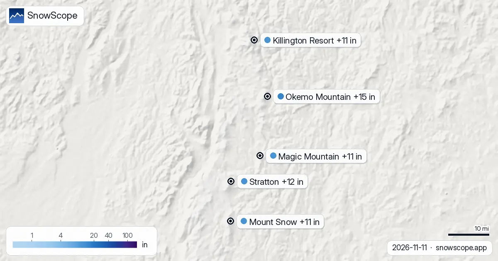
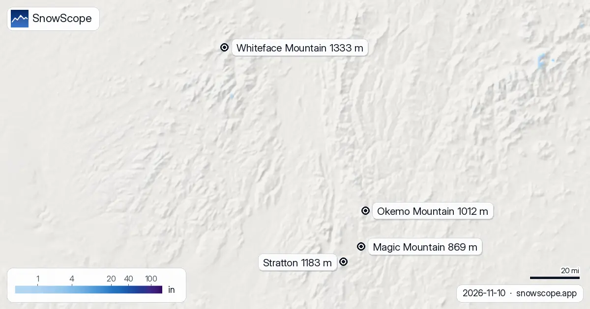

2 stations sur 4 au-dessus de la normale : la neige dans le Nord-Est américain face aux hivers passés (15 novembre)
2 sur 4 : c'est le nombre de stations dans le Nord-Est américain nettement au-dessus de la normale aujourd'hui. À quoi ressemble cet hiver jusqu'ici ? Nous avons mis la neige du jour dans 4 stations dans le Nord-Est américain face à la même date lors de chacun des 46 hivers passés. 2 sont bien au-dessus de la normale. Sur le terrain, la première chose que nous regardons, c'est l'ombre : la neige tient là où le soleil n'arrive pas.
Consultez les prévisions neige en temps réel pour Magic Mountain sur l'application SnowScopeHauteurs de neige, alertes poudreuse et carte 3D, gratuitement.
Ce qu'il y a au sol
Des lieux cités ici, Magic Mountain est en tête avec environ 5 in (13 cm) sur le haut du domaine ; Gore Mountain 4 in (10 cm) et Killington Resort 4 in (10 cm) viennent ensuite.
Dans la région, 41 stations sur 111 dans le Nord-Est américain ont de la neige en altitude aujourd'hui, et notre modèle trouve 6 039 sq mi (15 640 km²) de sol blanc.
Un mot sur les chiffres : les valeurs des stations de ski sont une estimation de notre modèle pour le haut du domaine, alors que chaque station de mesure mesure un seul point à la date indiquée.
| Station | Hauteur de neige | Neige fraîche, 72 h | Attendu, jours suivants | Sommet |
|---|---|---|---|---|
| Magic Mountain | 5 in (13 cm) | 3 in (8 cm) | 0 in (0 cm) | 2 851 ft (869 m) |
| Gore Mountain | 4 in (10 cm) | 2 in (5 cm) | 0 in (0 cm) | 3 583 ft (1 092 m) |
| Killington Resort | 4 in (10 cm) | 3 in (7 cm) | 0 in (0 cm) | 4 140 ft (1 262 m) |
| Stratton | 4 in (10 cm) | 4 in (10 cm) | 0 in (0 cm) | 3 881 ft (1 183 m) |
À quoi s'attendre ensuite
Les prévisions à quelques jours peuvent changer : regardez à nouveau la carte la veille du départ.
Face aux autres hivers
Rien d'anormal à Magic Mountain : 0 in (0 cm) à 2 113 ft (644 m) aujourd'hui, plus que lors de 23 des 46 hivers passés, avec 0 in (1 cm) comme valeur habituelle.
À Gore Mountain, la neige est à peu près là où elle doit être : 0 in (0 cm) à 2 316 ft (706 m), plus que lors de 21 des 46 hivers passés (habituel : 0 in (1 cm)).
Killington Resort démarre bien. À 2 651 ft (808 m), notre modèle donne 2 in (6 cm) aujourd'hui, plus qu'à cette date lors de 37 des 46 hivers passés ; l'habituel est de 0 in (1 cm).
Bonne nouvelle de Stratton : 3 in (7 cm) à 2 936 ft (895 m) aujourd'hui, plus que lors de 43 des 46 hivers passés à cette date (habituel : 0 in (1 cm)).
Conseils aux skieurs
- Les pentes sud prennent le plus de soleil et fondent d'abord ; les pentes nord en altitude gardent leur neige le plus longtemps.
- De la neige sur la carte ne veut pas dire que la station est ouverte : vérifiez remontées et dates d'ouverture sur son site.
- La neige de début de saison est fine. Restez sur les pistes ouvertes et damées : cailloux et herbe se cachent juste dessous.
- Activez une alerte poudreuse dans l'app SnowScope pour savoir quand Magic Mountain reçoit de la neige fraîche.
À propos de ces chiffres
Les hauteurs de neige des stations sont la neige la plus épaisse sur le haut du domaine, d'après le modèle de neige SnowScope (environ 1 km, calcul du 15 novembre) ; ce sont des estimations pour une zone, pas une mesure en un point. Les valeurs des stations de mesure sont mesurées à la date indiquée. Les prévisions peuvent changer. Consultez toujours le bulletin d'avalanche officiel avant le hors-piste.
Bulletins d'avalanche officiels: Mount Washington Avalanche Center
Citer ce bulletin
Pour la recherche, l'enseignement ou la presse : chiffres et graphiques réutilisables librement sous CC BY 4.0 avec cette citation.
SnowScope (2026), 2 stations sur 4 au-dessus de la normale : la neige dans le Nord-Est américain face aux hivers passés (15 novembre), https://snowscope.app/blog/fr/2026/11/us-northeast-snow-vs-past-winters-15-november-2026.html, consulté le 2026-11-15
SnowScope (Atlas Labs). (2026, November 15). 2 stations sur 4 au-dessus de la normale : la neige dans le Nord-Est américain face aux hivers passés (15 novembre). SnowScope snow reports. https://snowscope.app/blog/fr/2026/11/us-northeast-snow-vs-past-winters-15-november-2026.html
BibTeX
@misc{snowscope2026usnortheastsnowvspastwin,
author = {{SnowScope (Atlas Labs)}},
title = {2 stations sur 4 au-dessus de la normale : la neige dans le Nord-Est américain face aux hivers passés (15 novembre)},
year = {2026},
month = nov,
howpublished = {\url{https://snowscope.app/blog/fr/2026/11/us-northeast-snow-vs-past-winters-15-november-2026.html}},
note = {Published 2026-11-15 20:22 UTC; accessed 2026-11-15}
}· CC BY 4.0 · Méthodes, données et outils →
Magic Mountain : neige et température selon l'altitude, cet hiver vs l'hiver dernier (outils) →
Suivre Magic Mountain
Gratuit : un message quand la neige arrive, et la météo chaque matin.
Autres bulletins neige

Bulletin neige dans le Nord-Est américain, 11 novembre. D'ici le 14 novembre, la prévision donne 15 in (38 cm) à Okemo Mountain, 12 in (30 cm) à …

L'isotherme 0 °C dans le Nord-Est américain, prochains jours : 1 936 ft (590 m) à 6 037 ft (1 840 m). Heures les plus douces : limite pluie-neige …

Où va-t-il neiger dans le Nord-Est américain entre le 13 novembre et le 26 novembre, et combien ? Nous avons interrogé les deux modèles mondiaux qui …